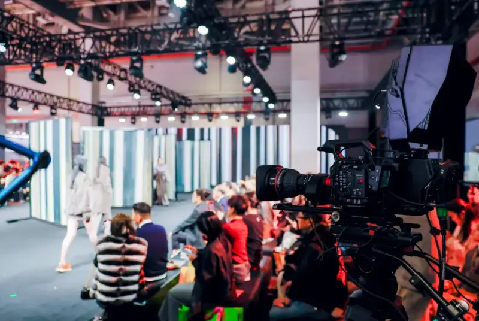
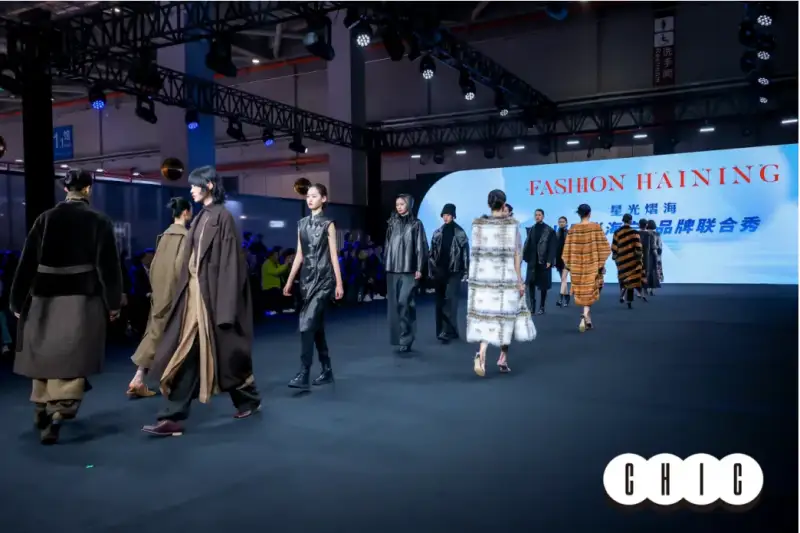
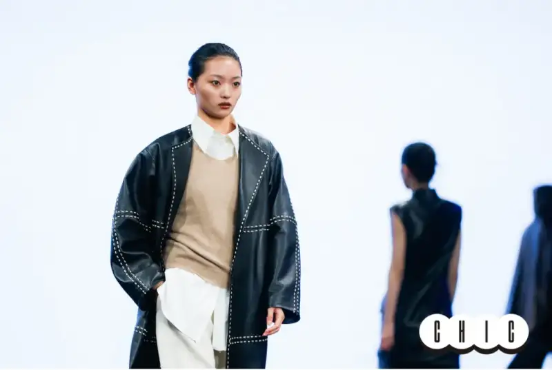
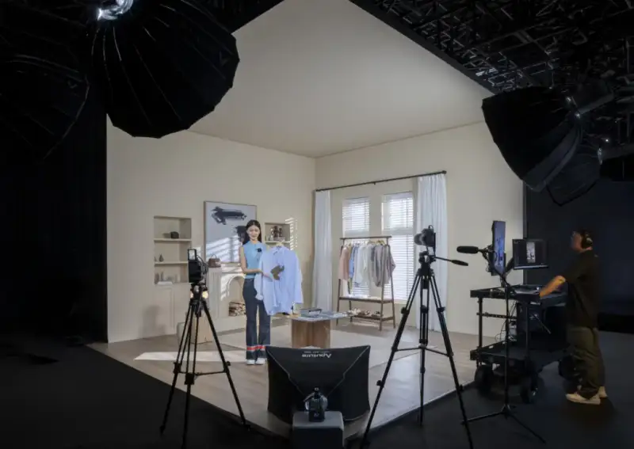
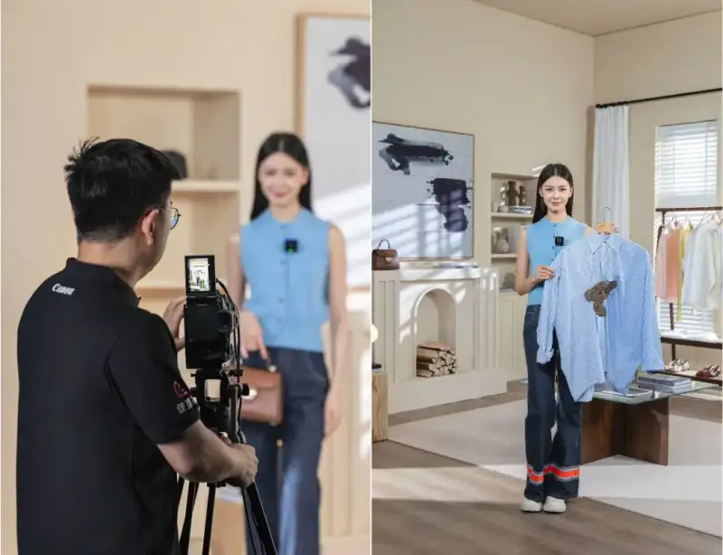
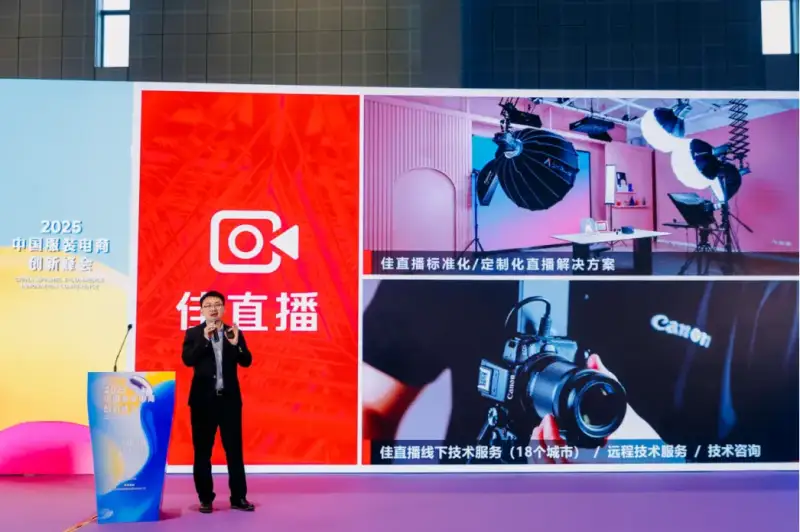
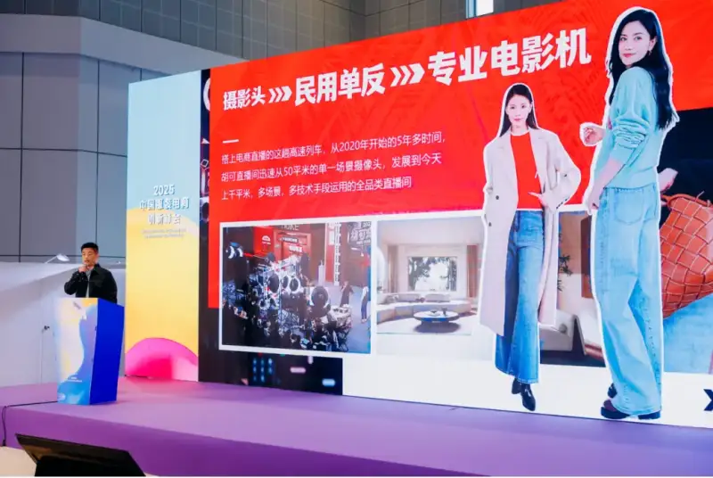

On March 12, 2025, Canon (China) presented its Jia Live solution at the China International Fashion Fair Spring Show 2025 (CHIC2025 Spring Show). With the theme New Brands, New Channels, New Aesthetics, the show set a new direction for high-quality growth of the fashion industry. As Canon professional live-streaming solution brand, Jia Live appeared as the officially recommended brand live-streaming solution provider for CHIC2025 Spring Show, giving on-site fashion brands a better live-streaming experience. At the same time, Jia Live and the China National Garment Association (CHIC) reached a partnership. The two sides will develop more innovative solutions for the varied needs of fashion live-streaming brands, improve visual communication between brands and users, and jointly advance the technology of the fashion live-streaming industry.
Crowds outside the CHIC2025 Spring Show
From traditional to diverse: fashion live streaming opens a new model
The China National Garment Association (CHIC), as the leading body of the garment industry, has long worked to drive innovation and growth. As shopping habits change, fashion e-commerce has become a key engine of growth, and the live room has become the bridge between brands and consumers. Helping fashion clusters optimize the live room visually, raise brand favor, and close the gap between brand and consumer has become a new task for the industry.
As the fashion live-streaming industry grows fast, the scenes and methods keep breaking the old frame and moving toward diverse innovation. This brings consumers more direct styling ideas and an immersive experience. By upgrading both equipment and technology, brands create a combined experience of multi-dimensional visuals, immersive shopping, and real-time interaction, moving live streaming from clear to immersive and building a deep link between brand and user.

Jia Live provided the live-streaming solution for CHIC2025 Spring Show
Creating a visual feast: Jia Live provides a professional live-streaming solution for brand shows
Drawing on the influence of CHIC2025 Spring Show, many brands chose to appear in brand launch shows and let consumers witness them through live streaming. As the officially recommended provider, Jia Live gave on-site multi-camera professional support to the Fashion Haining joint brand show and the Guangzhou Nacenglin brand launch show.

The Fashion Haining joint brand show under the Jia Live feed
The Guangzhou Nacenglin brand launch show under the Jia Live feed
For the live broadcast of these brand shows, the Jia Live solution provided a 4K cinematic multi-camera on-site production built around the new EOS C400 cinema camera. This solution meets the high demand for clear, smooth, cinematic feeds in show live streaming, and it also supports professional needs such as remote transmission and real-time control of a broadcast-grade on-site system. A brand show must accurately reproduce the color of clothing, the texture of fabrics, and the bright detail of metal or gemstone accessories on the models. With 6K full-frame oversampling, the EOS C400 finely restores clothing color and material. Based on Canon professional portrait color science, it renders the model skin tone more translucent. Facing the show complex lighting and large contrast, the EOS C400 three base ISOs produce clean images even in low light. Compared with similar solutions on the market, one highlight of the EOS C400 cinematic multi-camera system is face-detection autofocus. Linked with Canon full-servo cinema zoom lenses, it can lock onto the model face or eyes throughout, even against bright LED backgrounds. With shallow depth of field, there is no worry about focus drift, so the camera operator can focus on composition and work much faster.

Even against a bright LED background, the EOS C400 focuses accurately
Three EOS C400 cameras were paired with one CN8x15 IAS S 8x servo zoom for the jib wide shot, and two CN10x25 IAS S 10x servo zooms for fixed close-up positions. The cinematic image quality presented the show from many angles and fully showed the quality of Canon cinema servo lenses. These lenses use a native mount and achieve high-performance autofocus through electronic contacts, so they work seamlessly with the EOS C400. Each lens has servo zoom, so the operator can zoom smoothly and quickly from the control handle and handle the changing composition of live streaming with ease. The cinema lenses not only deliver excellent image quality, but their light, compact design also suits the small EOS C400 body. They are easy to mount on jibs or gimbals and take little space on set, so they are easy to deploy. The lenses also support digital correction to reduce distortion and chromatic aberration, which further improves image quality. Whether for large-event live streaming or high-quality content output, this live-streaming kit gives users a professional visual experience and makes every stream more compelling.
Crew focused on composition, greatly improving efficiency
The compact EOS C400 with the CN8x15 IAS S 8x servo zoom working on a jib
Two fixed-position EOS C400 cameras with the CN10x25 IAS S 10x servo zoom
Deep in technical solutions: Jia Live has clear advantages in fashion
As a professional live-streaming solution brand, Jia Live quickly became a technology benchmark, drawing on Canon 80-plus years of imaging expertise. Its high-definition image quality, color science, stable transmission, sound equipment setup, and online and on-site installation and tuning meet the live-streaming needs of beauty, fashion, maternity, green-screen, and entertainment clients across scenes and budgets.
Jia Live solution 2.0
In fashion live streaming, Jia Live uses Canon cameras high-definition image quality and accurate color to make clothing show real texture and detail, helping brands present their products better. Jia Live also supports multi-camera switching and real-time effects, which lifts the interaction and spectacle and makes the brand live room stand out.

A scene of the brand fashion live-streaming solution

Fashion live-stream scene (left) and the Canon camera output (right)
The integrated solution from Jia Live simplifies the operation of live-streaming gear, lowers the technical barrier, and helps brands get started fast. Jia Live also provides online and on-site professional live-room setup and tuning. Its on-site Canon-certified Jia Live service teams already cover 18 cities across the country, including Harbin, Shijiazhuang, Jinan, Lanzhou, Zhengzhou, Xi an, Luoyang, Wenzhou, Shanghai, Hefei, Wuhan, Changsha, Hangzhou, Suzhou, Guangzhou, Xiamen, Shenzhen, and Chengdu, to give brands technical support.
A strong pairing joins forces to push the industry to a new level
Zhao Yingjun, Live-Streaming Business Operations Manager at Canon (China), said: We are very pleased to partner with the China National Garment Association (CHIC). Fashion e-commerce is a key field for live-streaming technology. Through the technical strength of Jia Live, we hope to help brands improve the effect and efficiency of their live streams.

Zhao Yingjun, Live-Streaming Business Operations Manager at Canon (China), introduces Jia Live
On site, Jia Live and its partner Xingpaidang appeared together at the first China Fashion E-Commerce Innovation Summit held at the same time, sharing on how to communicate with users and brands in the age of live-commerce. Gao Xuexin, Executive Vice President of the Xingpaidang Group, said: For the fashion track, from design to fabric, detail, and the static and dynamic presentation when worn, everything is closely tied to technical ability. Through the detailed shots of live streaming, the sheen and softness of a silk garment can be easily captured by the user, so they feel its value. Through the language of the lens, the user can feel the elegance and ease that French design brings and come to love the brand idea. The user can also see color aesthetics in fashion in the live room, so they understand that dressing is an art. Take Hu Ke live room as an example. In the five-plus years since 2020, it quickly grew from a single 50-square-meter camcorder setup to today thousand-square-meter, multi-scene, multi-technique, full-category live room.

Gao Xuexin, Executive Vice President of the Xingpaidang Group, shares
The strong pairing of Jia Live and the China National Garment Association will drive the innovation and use of live-streaming technology, explore new approaches in fashion live streaming, and help the industry achieve high-quality growth.
1. For clarity, Canon in this article may refer to Canon (China), Canon Inc., or the Canon brand.
About the Canon Group
Canon was founded in 1937. Guided by the corporate philosophy of Kyosei, or living and working together for the common good, Canon aims to create world-class products and keeps diversifying and globalizing. Today Canon business centers on optical technology and spans printing, imaging, medical, industrial, and other cutting-edge fields. The group headquarters in Tokyo works closely with regional headquarters in the Americas, Europe, Asia, Oceania, and Japan, building a management system that combines global scale with local roots. In 1996, Canon launched the Global Excellent Enterprise Group plan, aimed at using technology to serve society and becoming a trusted, respected company worldwide. (Data as of March 2024.)
About Canon (China)
Canon business in China began in the 1970s. From early technical cooperation to wholly owned factories and then a sales company, it explored many business models. After investing in its first production plant in Dalian in 1989, Canon related companies in mainland China now cover production, R&D, and sales through years of effort. In March 1997, Canon (China) was established to take full charge of Canon sales in the Chinese market. Today Canon (China) has built 13 branches, including the North China, East China, and South China regional headquarters, along with showrooms, quick repair centers, and fast service stations, forming a nationwide sales and service network. Its business spans imaging systems, office products, industrial equipment, and intelligent IT solutions, and it keeps adding new services that fit Chinese consumers. Canon (China) is deeply rooted in the Chinese market and aims to be a company trusted and respected by the Chinese people. (Data as of March 2024.)